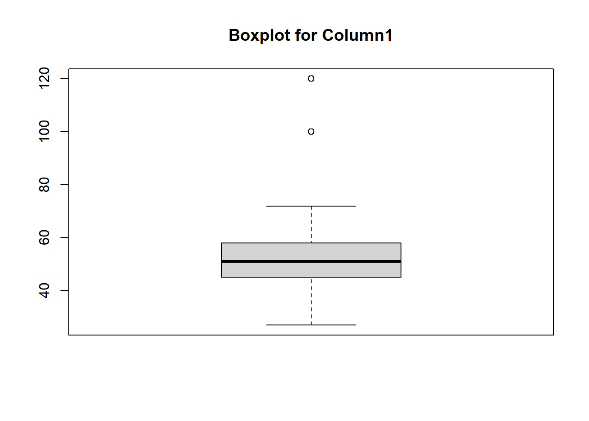
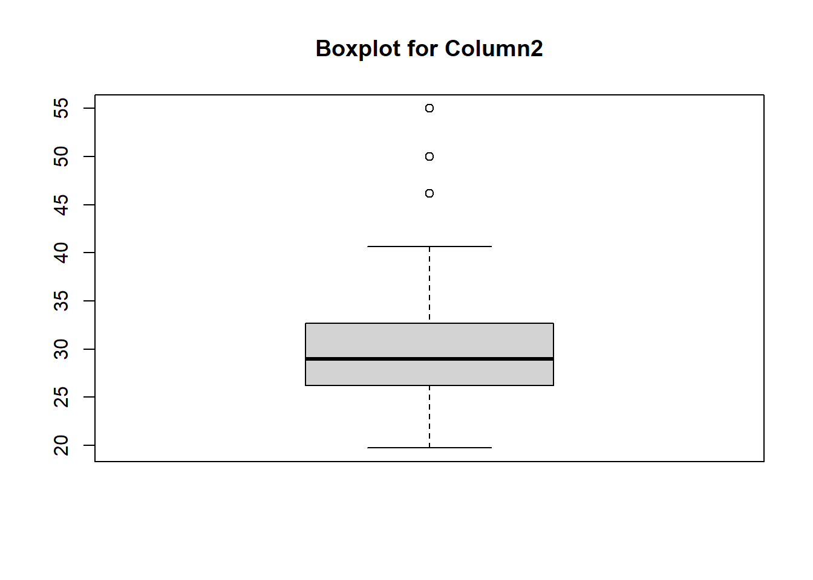

How to Remove Outliers from Multiple Columns in R: A Comprehensive Guide
code
rtip
operations
Author
Steven P. Sanderson II, MPH
Published
September 24, 2024
Keywords
Programming, Outlier detection in R, IQR method in R, Z-score outlier removal, Multivariate outliers in R, R outlier removal function, Data cleaning in R, Handling outliers in datasets, R programming for data analysis, Boxplot outlier detection R, R packages for outlier detection
Introduction
Outliers can significantly skew your data analysis results, leading to inaccurate conclusions. For R programmers, effectively identifying and removing outliers is crucial for maintaining data integrity. This guide will walk you through various methods to handle outliers in R, focusing on multiple columns, using a synthetic dataset for demonstration.
Understanding Outliers
Definition and Impact on Data Analysis
Outliers are data points that differ significantly from other observations. They can arise due to variability in the measurement or may indicate experimental errors. Outliers can heavily influence the results of your data analysis, leading to biased estimates and incorrect conclusions.
Common Causes of Outliers
Outliers typically result from data entry errors, measurement errors, or natural variability. Identifying their cause is essential to determine whether they should be removed or retained.
Methods to Identify Outliers
Visual Methods: Boxplots and Scatter Plots
Boxplots and scatter plots are simple yet effective visual tools for spotting outliers. Boxplots display the distribution of data and highlight values that fall outside the whiskers, indicating potential outliers.
# Creating a synthetic datasetset.seed(123)data <-data.frame(Column1 =rnorm(100, mean =50, sd =10),Column2 =rnorm(100, mean =30, sd =5))# Introducing some outliersdata$Column1[c(5, 20)] <-c(100, 120)data$Column2[c(15, 40)] <-c(50, 55)# Boxplot to visualize outliersboxplot(data$Column1, main="Boxplot for Column1")

boxplot(data$Column2, main="Boxplot for Column2")

Statistical Methods: Z-score, IQR, and Others
Statistical methods like Z-score and Interquartile Range (IQR) provide a more quantitative approach to identifying outliers. The Z-score measures how many standard deviations a data point is from the mean, while IQR focuses on the spread of the middle 50% of data.
Using the IQR Method
Explanation of the IQR Method
The IQR method identifies outliers by calculating the range within the first and third quartiles (Q1 and Q3). Outliers are typically considered as data points below Q1 - 1.5IQR or above Q3 + 1.5IQR.
Step-by-Step Guide to Applying IQR in R for Multiple Columns
A Z-score indicates how many standard deviations a data point is from the mean. A common threshold for identifying outliers is a Z-score greater than 3 or less than -3.
Consider a synthetic dataset containing columns of normally distributed data with added outliers. Applying the methods discussed can help clean the dataset for better analysis and visualization, ensuring accuracy and reliability in results.
Best Practices for Outlier Removal
When to Remove vs. When to Keep Outliers
Not all outliers should be removed. Consider the context and reason for their existence. Sometimes, outliers can provide valuable insights.
Common Pitfalls and How to Avoid Them
Mistakes to Avoid in Outlier Detection and Removal
Avoid blanket removal of outliers without understanding their cause. Ensure your data cleaning process is well-documented and reproducible.
Advanced Techniques
Machine Learning Approaches to Handle Outliers
Advanced machine learning techniques, such as isolation forests or autoencoders, can handle outliers more effectively, especially in large datasets.
Tools and Packages in R for Outlier Detection
Overview of Useful R Packages
Several R packages can assist in outlier detection, such as dplyr, caret, and outliers. These tools offer functions and methods to streamline the process.
Conclusion
Properly identifying and handling outliers is crucial for accurate data analysis in R. By applying the methods and best practices outlined in this guide, you can ensure your datasets remain robust and reliable.
Quick Takeaways
Context Matters: Always consider the context before removing outliers.
Multiple Methods: Use a combination of visual and statistical methods for detection.
Automation: Automate processes for efficiency and consistency.
FAQs
What is an outlier in R? An outlier is a data point significantly different from other observations in a dataset.
How does the IQR method work in R? The IQR method calculates the range between the first and third quartiles and identifies outliers as points outside 1.5 times the IQR from the quartiles.
Can I automate outlier removal in R? Yes, by creating functions or using packages like dplyr for streamlined processing.
What are the best R packages for outlier detection? Packages like dplyr, caret, and outliers are useful for detecting and handling outliers.
Should I always remove outliers from my dataset? Not necessarily. Consider the context and potential insights the outliers might provide.
Your Turn!
We’d love to hear about your experiences with outlier removal in R! Share your thoughts and this guide with your network on social media.